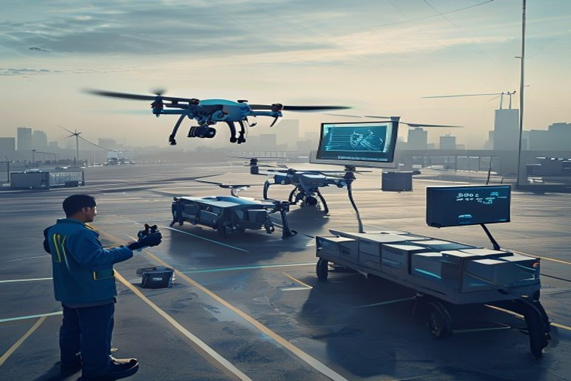
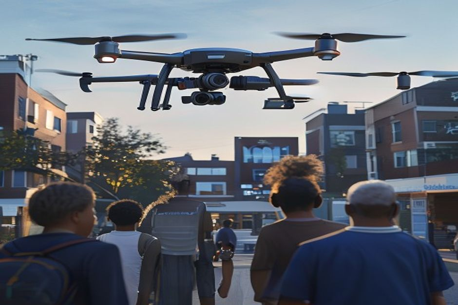
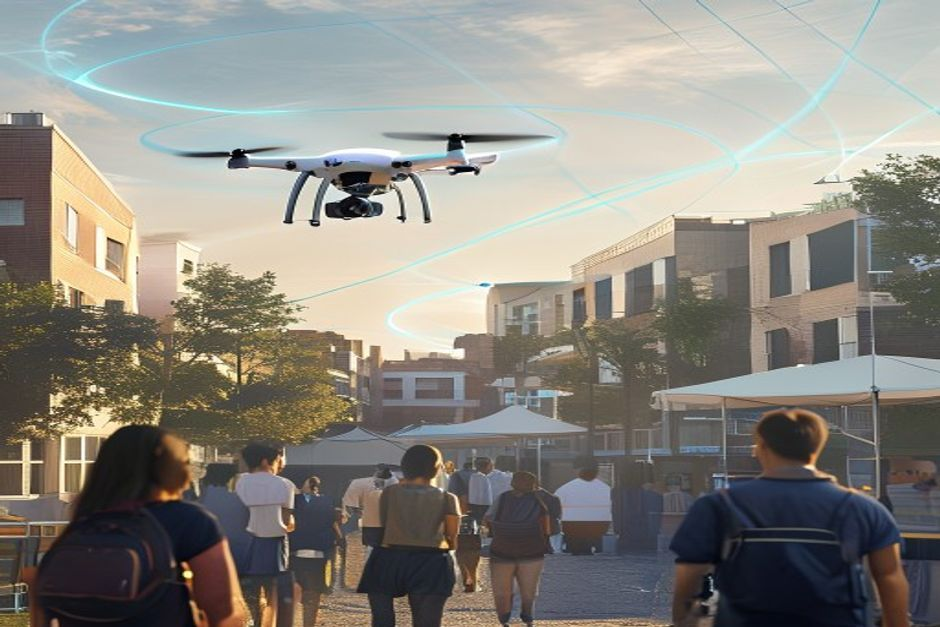

This report synthesizes internal documents and approved supplementary web evidence to formulate a market entry strategy for high-density urban drone deliveries that bypass restricted zones such as schools and events. The primary sources are OmniLogistics' financial memo, consumer survey, and regulatory update. Key findings include a 68% consumer acceptance rate, a 25 lbs weight limit for unrestricted corridor access, and a $45.5M capital allocation. The strategy prioritizes fleet recalibration to Swift-Class drones, deployment of Whisper-Prop technology, and adherence to altitude and data retention rules.
Regulatory Compliance: Fleet Recalibration and Operational Constraints
OmniLogistics must immediately recalibrate its fleet to comply with the 25 lbs weight limit for unrestricted urban corridor access, replacing the overweight Heavy-Lifter v2 with Swift-Class drones.

The regulatory update (doc3_regulatory_update.md) establishes a strict 25 lbs (11.3 kg) total takeoff weight limit for drones operating in unrestricted urban corridors. OmniLogistics' current Heavy-Lifter v2 drone exceeds this limit by 2.5 lbs when fully loaded, rendering it non-compliant for urban center operations.
The document explicitly states that the Engineering team has been notified to modify payload capacity limits in dispatch software, and the fleet mix must prioritize Swift-Class drones (total weight 18 lbs) for urban centers. This recalibration is essential to avoid regulatory penalties and ensure uninterrupted operations.
Additional operational constraints include altitude limits (cruising between 150-300 feet, with below 150 feet only during VTOL phases) and a 90-day data retention requirement for flight telemetry and sensor data. These rules must be integrated into standard operating procedures.
Restricted zones—schools during operating hours, major sporting events, and government building security perimeters—require dynamic geofencing and real-time route optimization to bypass. The Swift-Class drones' lower weight may facilitate easier compliance with these no-fly zones.
- [Chunk: 8dc8158d-24e0-4d7a-a793-0a28578d71c8] "Weight Limits: The total takeoff weight (drone + payload) cannot exceed 25 lbs (11.3 kg) for unrestricted urban corridor access." — Establishes the primary regulatory constraint driving fleet recalibration.
- [Chunk: 8dc8158d-24e0-4d7a-a793-0a28578d71c8] "Our current 'Heavy-Lifter v2' drone exceeds the 25 lbs limit by 2.5 lbs when fully loaded." — Identifies the specific compliance gap.
- [Chunk: 8dc8158d-24e0-4d7a-a793-0a28578d71c8] "Data Retention: Flight telemetry and sensor data must be retained for a minimum of 90 days." — Operational requirement for incident investigations.
The executive case should start with the few numbers the private-document record can support
Each headline metric is traceable to a retained private-document sources sentence.
Evidence: RAG-E9, RAG-E2, RAG-E3. Sources: internal.enterprise.
These values are extracted from private-document sources text; they are not model-created scores.
Sources
- RAG-E9 private-document $45.5M - OmniLogistics is allocating $45.5 million in capital expenditure for "Project SkyNet," our autonomous drone delivery initiative in urban centers. doc1_financial_memo.md (Fragment dfe35bb5)
- RAG-E2 private-document $4.10 - We project that by Q4 2027, Project SkyNet will reduce last-mile delivery costs by 35% (from $4.10 per package to $2.66). doc1_financial_memo.md (Fragment dfe35bb5)
- RAG-E3 private-document $2.66 - We project that by Q4 2027, Project SkyNet will reduce last-mile delivery costs by 35% (from $4.10 per package to $2.66). doc1_financial_memo.md (Fragment dfe35bb5)
Consumer Acceptance: Addressing Noise and Privacy Concerns
With 68% of urban residents comfortable with drone delivery, OmniLogistics can leverage Whisper-Prop technology and camera shuttering to address the top concerns of noise (42%) and privacy (35%).

The consumer survey (doc2_consumer_survey.md) reveals strong overall acceptance (68%) but highlights noise pollution as the primary concern (42%), followed by privacy (35%) and safety (18%). These findings are based on a sample of 5,200 urban residents across five global cities.
The strategic recommendation in the same document explicitly calls for deploying Whisper-Prop technology, which reduces decibel levels by 40%, and shuttering outward-facing cameras during final descent to reassure customers about privacy. These measures directly address the top two concerns.
Supplementary web evidence from Whisper Aero (WEB-E3, WEB-E5) indicates that their electric ducted fan propulsors are at least 100 times quieter and 20% more efficient than competitors, corroborating the viability of noise reduction technology. However, the internal Whisper-Prop claim (40% reduction) remains the primary basis for strategy.
The willingness-to-pay data (55% of users willing to pay up to $2.50 for 30-minute delivery) suggests a viable premium pricing model that can offset the costs of quieter technology and enhanced privacy measures.
- [Chunk: a0b1d49e-38b1-44ee-ada8-d097304c6f33] "Overall Acceptance: 68% of respondents indicated they are 'comfortable' or 'very comfortable' receiving small packages via drone." — Baseline acceptance rate.
- [Chunk: a0b1d49e-38b1-44ee-ada8-d097304c6f33] "Noise Pollution: 42% cited the buzzing sound of drones as their top concern." — Primary consumer barrier.
- [Chunk: de542563-57aa-42b0-8408-cfc9c7100068] "To address the noise concerns, OmniLogistics must prioritize the deployment of our 'Whisper-Prop' technology, which reduces decibel levels by 40%." — Direct strategic recommendation.
- [Chunk: a0b1d49e-38b1-44ee-ada8-d097304c6f33] "Willingness to Pay: 55% of users are willing to pay a premium of up to $2.50 for drone delivery if it guarantees arrival within 30 minutes." — Supports premium pricing model.
Financial Viability: Capital Allocation and Break-Even Projections
Project SkyNet's $45.5M capital expenditure, with a projected 35% reduction in last-mile delivery costs and 18-month break-even, is financially viable if daily delivery volumes reach 150,000 packages across top markets.
The financial memo (doc1_financial_memo.md) details a $45.5M capital allocation for Project SkyNet, a 25% increase from initial Q1 projections due to faster-than-expected advancements in obstacle avoidance systems. The budget breakdown includes $22.0M for hardware, $12.5M for software/AI, $4.5M for regulatory compliance, $3.0M for marketing, and $3.5M contingency.
The memo projects a 35% reduction in last-mile delivery costs from $4.10 to $2.66 per package by Q4 2027, with a break-even point of 18 months post-launch assuming a minimum daily delivery volume of 150,000 packages across the top 5 urban markets.
The 25% budget increase reflects confidence in technological progress, but the financial outlook depends on achieving scale. The consumer survey's 55% willingness to pay a premium supports revenue generation, but operational costs must be managed to hit the $2.66 target.
Regulatory compliance costs ($4.5M) and marketing ($3.0M) are essential investments to ensure smooth entry and consumer adoption. The contingency fund ($3.5M) provides a buffer for unforeseen challenges.
- [Chunk: dfe35bb5-0eda-4a50-8180-aacb83f79cbd] "OmniLogistics is allocating $45.5 million in capital expenditure for 'Project SkyNet,' our autonomous drone delivery initiative in urban centers." — Total investment.
- [Chunk: dfe35bb5-0eda-4a50-8180-aacb83f79cbd] "We project that by Q4 2027, Project SkyNet will reduce last-mile delivery costs by 35% (from $4.10 per package to $2.66)." — Cost reduction target.
- [Chunk: dfe35bb5-0eda-4a50-8180-aacb83f79cbd] "The break-even point for this capital investment is estimated at 18 months post-launch, assuming a minimum daily delivery volume of 150,000 packages across our top 5 urban markets." — Key financial milestone.
Operational Strategy: Bypassing Restricted Zones and Ensuring Safety
Dynamic geofencing, real-time route optimization, and adherence to altitude limits will enable drones to bypass schools and events while maintaining safety and compliance.

The regulatory update explicitly prohibits drone flights over schools during operating hours, major sporting events, and government building security perimeters. To comply, OmniLogistics must implement dynamic geofencing that updates in real-time based on event schedules and school hours.
Altitude limits (150-300 feet cruising, below 150 feet only during VTOL) provide a vertical buffer that can help avoid ground-level restricted zones. However, horizontal routing must be carefully planned to avoid no-fly areas.
The consumer survey indicates 18% of respondents fear package drops or malfunctions over crowded areas. To address this, the Swift-Class drones' lower weight (18 lbs) reduces kinetic energy in case of failure, and the 90-day data retention requirement ensures traceability for incident investigations.
Supplementary web evidence on Whisper Aero's quieter technology (WEB-E3) supports the use of low-noise propulsors to minimize disturbance near schools and events, though the primary strategy relies on internal Whisper-Prop deployment.
- [Chunk: 8dc8158d-24e0-4d7a-a793-0a28578d71c8] "Restricted Zones: Drones are strictly prohibited from flying over schools during operating hours, major sporting events, and government building security perimeters." — Defines no-fly zones.
- [Chunk: 8dc8158d-24e0-4d7a-a793-0a28578d71c8] "Altitude Limits: Delivery drones must maintain a cruising altitude between 150 and 300 feet." — Operational altitude constraint.
- [Chunk: a0b1d49e-38b1-44ee-ada8-d097304c6f33] "Safety: 18% expressed fear of packages being dropped or drones malfunctioning over crowded areas." — Consumer safety concern.
Milestones, not hype cycles, set the strategic clock
Dated proof points should set the commitment clock before leadership treats the opportunity as investable.
The timeline uses dated supplementary web evidence and avoids turning milestone timing into a forecast.
Evidence: WEB-E2, WEB-E21, WEB-E22, WEB-E23, WEB-E9, WEB-E19. Sources: olcf.ornl.gov; greydynamics.com; journals.plos.org.
Sources
- WEB-E2 supplementary web 1937 - Previously home to a publisher of magazines — including, coincidentally, Trade-A-Plane , an airplane sales publication started in 1937 — the long-empty property’s cavernous spaces are now filled with multidisciplinary. Flying Quieter and Cleaner
- WEB-E21 supplementary web 2007 - The Ghatak evolved from the earlier Autonomous Unmanned Research Aircraft (AURA) concept, made public in 2007. The Ghatak: India's Premier Autonomous Stealth Drone
- WEB-E22 supplementary web 2016 - In 2016, the program received formal sanctioning and funding, marking the start of major development works. The Ghatak: India's Premier Autonomous Stealth Drone
- WEB-E23 supplementary web 2022 - In 2022, the prototypes culminated in a successful maiden flight. The Ghatak: India's Premier Autonomous Stealth Drone
- WEB-E9 supplementary web 2024 - In January 2024, employees of the 3-year-old start-up moved into their new headquarters, refurbishing its dusty rooms into a 21st century aerospace technology facility with areas for R&D prototyping, testing. Flying Quieter and Cleaner
- WEB-E19 supplementary web 2025 - Citation: Mao Y, Jia G (2025) Research on the optimization of delivery routes for vehicles with drones under no-fly zone restrictions. Research on the optimization of delivery routes for vehicles with ...
Technology Deployment: Whisper-Prop and Camera Shuttering
Deploying Whisper-Prop technology and camera shuttering during descent directly addresses the top consumer concerns of noise and privacy, supported by internal recommendations and supplementary web evidence.
The consumer survey's strategic recommendation explicitly states that OmniLogistics must prioritize Whisper-Prop technology, which reduces decibel levels by 40%. This is a direct, actionable directive from the internal document.
Supplementary web evidence (WEB-E3, WEB-E5) from Whisper Aero indicates that their electric ducted fans are at least 100 times quieter and 20% more efficient than competitors, providing external validation of noise reduction potential. However, the internal 40% reduction figure remains the primary metric.
The same recommendation calls for outward-facing cameras to be visibly shuttered during the final descent phase to reassure customers about privacy. This low-cost measure can significantly mitigate the 35% privacy concern.
These technology deployments should be prioritized in the software & AI development budget ($12.5M) and integrated into the Swift-Class drone design. Marketing campaigns should highlight these features to differentiate OmniLogistics from competitors.
- [Chunk: de542563-57aa-42b0-8408-cfc9c7100068] "To address the noise concerns, OmniLogistics must prioritize the deployment of our 'Whisper-Prop' technology, which reduces decibel levels by 40%." — Core noise mitigation strategy.
- [Chunk: de542563-57aa-42b0-8408-cfc9c7100068] "Additionally, all outward-facing cameras must be visibly shuttered during the final descent phase to reassure customers about privacy." — Privacy measure.
- [Chunk: a0b1d49e-38b1-44ee-ada8-d097304c6f33] "Privacy: 35% were worried about cameras on drones recording private property." — Quantifies the concern addressed by shuttering.
Cost benchmarks must be put on the same unit before they change allocation choices
Evidence: RAG-E2, RAG-E3. Sources: internal.enterprise.
The exhibit compares only values that private-document sources state in the same unit.
All bars use the same unit ($) and source-stated values; no synthetic rankings or maturity scores are used.
Sources
- RAG-E2 private-document 4.10 $ - We project that by Q4 2027, Project SkyNet will reduce last-mile delivery costs by 35% (from $4.10 per package to $2.66). doc1_financial_memo.md (Fragment dfe35bb5)
- RAG-E3 private-document 2.66 $ - We project that by Q4 2027, Project SkyNet will reduce last-mile delivery costs by 35% (from $4.10 per package to $2.66). doc1_financial_memo.md (Fragment dfe35bb5)
Conflicts requiring human review
These conflicts were not resolved automatically. The report keeps private-document evidence as its working basis until a human decides.
RAG working basis: Weight Limits: The total takeoff weight (drone + payload) cannot exceed 25 lbs (11.3 kg) for unrestricted urban corridor access. doc3_regulatory_update.md (Fragment 8dc8158d)
Supplementary web claim: Maximum Takeoff Weight : 13,000 kg (28,660 lbs) The Ghatak: India's Premier Autonomous Stealth Drone